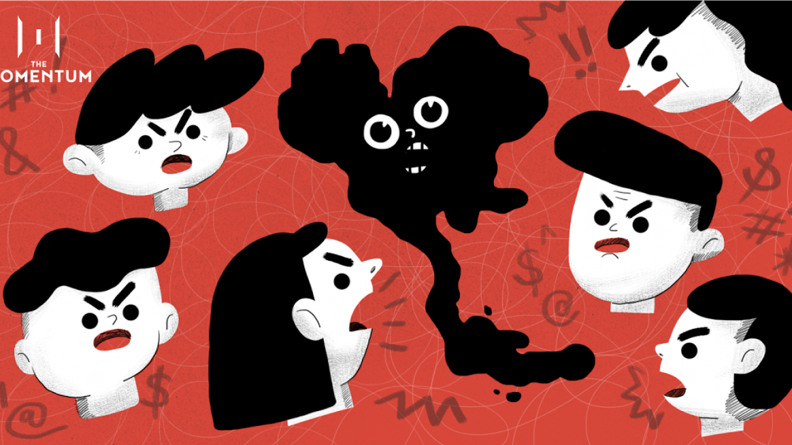

ในชีวิตประจำวัน เรามักพบกับเหตุการณ์ที่ไม่เป็นไปตามที่หวัง และผู้คนที่ยากจะเข้าใจ ความไม่ยุติธรรมและเหตุการณ์ที่ไม่ควรเกิดขึ้นมักเป็นส่วนหนึ่งของชีวิต การพยายามแสดงความไม่พอใจผ่านคำพูดเชิงลบหรือการตำหนิกลับไม่ได้ทำให้สถานการณ์ดีขึ้นแต่อาจยิ่งสะท้อนให้เห็นถึงภาวะจิตใจที่ไม่สงบ การจัดการกับความรู้สึกและปฏิกิริยาของเราต่อเหตุการณ์เหล่านี้จึงเป็นสิ่งสำคัญ บทความนี้จะพาเราไปสำรวจวิธีการที่เราสามารถจัดการกับความรู้สึกเหล่านี้ได้อย่างมีประสิทธิภาพ
มีหลายเรื่องที่โลกดูไม่ยุติธรรม, มีมากมายที่ไม่เป็นดังใจดังหวัง, มีหลายคนที่ยากจะเข้าใจความคิดของเขา, เหตุการณ์ที่ไม่ควรจะเกิด ก็เกิดและความพยายามของเรามีไม่น้อยกลับให้ผลตรงกันข้าม เมื่อเหตุการณ์เหล่านี้เกิดขึ้น การพร่ำบ่น ก่นด่า อาจเกิดขึ้นมา ทว่ามันก็ไม่ได้ดีขึ้น.การขว้างลูกบอลเข้ากำแพง ยิ่งขว้างแรงก็ยิ่งกระเด้งกลับมาแรง เสมือนการที่เราพ่นคำร้าย บ่นด่าออกไป ยิ่งสะท้อนภาวะจิตใจลึก ๆ ให้แย่ลง หลายครั้งเราพยายามที่จะใช้คำพูดประชด สาดใส่ หรือหวังพยายามกรีดแทงบางคน สิ่งที่ได้กลับมาอาจเป็นคำพูดที่แรง ๆ เช่นกัน แม้จะทำให้อีกฝ่ายเสียใจไปได้ แต่ผลลัพธ์ที่ดีก็ไม่เกิดขึ้น และการเสียความรู้สึกก็ก่อเกิดภายใต้จิตใจทั้งสองฝ่าย เผลอๆ เป็นผู้พูดเองที่เสียใจมากกว่า
หลายคนก็เข้าใจดีว่า เรื่องแย่ ๆ หลายเรื่องมันเกิดจากปัจจัยที่เราควบคุมไม่ได้ การจะพูดอะไรไปมันล้วนไร้ประโยชน์ นิ่ง เฉย อยู่แต่กับตัวเองไปเสียดีกว่า เช่นนี้ก็ดี แต่ก็มีไม่น้อยที่กลายเป็นว่า ปัจจัยโดยอย่างยิ่งเมื่อเป็นคนอื่น พอเราไม่พูด กลับยิ่งมักง่าย, มองข้าม,หรือเข้าใจไปเองว่า ไม่จำเป็นต้องเกรงใจ บางทีก็นึกว่าที่เราไม่พูดนั้น มันดีแล้ว เราชอบแล้ว…
ดังนั้นแม้การไม่บ่น ไม่ด่า ไม่พูด เป็นสิ่งที่ดีกว่าในหลายสถานการณ์ แต่ก็ใช่ทั้งหมด การไม่พูดเลยบางทีก็แย่ลง, สร้างความเข้าใจผิด,ไม่มีอะไรดีขึ้นเช่นกันซึ่งการไม่พูด เก็บไว้ แล้วขจัดออกไปจากใจได้เองก็ถือว่าจัดการภาวะอารมณ์ได้ดีเยี่ยม ทว่าแม้ไม่ถึงกับรกจิตใจแต่นานไปมันก็เป็นตะกอน.. การบ่นบ้าง ติงบ้าง เตือนบ้าง บอกบ้าง น้อย ๆ จึงเป็นเหมือนยาระบาย นอกจากของเสียจะพ้นไป ยังทำให้เราโล่ง และเบา เหมือนยกภาระบางอย่างออกไป แน่นอนถ้ามากไปคงเป็นยาถ่ายที่ไม่ใช่ระบายแค่ของเสีย ของดีก็เสียไปด้วยและปวดทรมาน ทีนี้ก็อยู่ที่ว่า มากน้อยแค่ไหนจะพอดี ที่ถ้าควบคุมให้ได้ น้อย ๆ เป็นยาระบาย ได้แน่นอน
แม้ว่าการไม่พูดหรือบ่นจะดูเหมือนเป็นวิธีที่ดีที่สุดในการหลีกเลี่ยงความขัดแย้ง แต่การเก็บทุกอย่างไว้ในใจนานเกินไปก็อาจทำให้เกิดความเครียดและความรู้สึกแย่สะสม การบ่นหรือแสดงความคิดเห็นเล็กน้อยในบางครั้งสามารถช่วยให้เรารู้สึกโล่งใจและปลดปล่อยความรู้สึกที่ไม่ดีออกไป การหาจุดสมดุลระหว่างการแสดงความรู้สึกและการนิ่งเฉยเป็นสิ่งสำคัญ การใช้คำพูดเชิงบวกและการสื่อสารที่สร้างสรรค์สามารถช่วยลดความเข้าใจผิดและสร้างความสัมพันธ์ที่ดีขึ้นได้ การจัดการกับอารมณ์และการแสดงออกอย่างเหมาะสมจึงเป็นทักษะที่ควรฝึกฝนเพื่อชีวิตที่มีความสุขและสงบสุขมากขึ้น